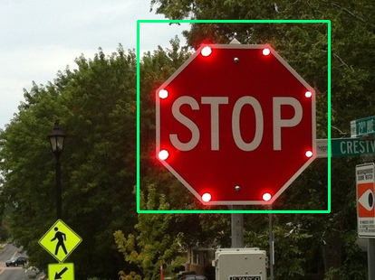
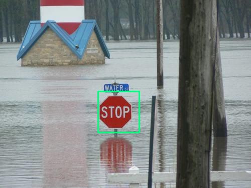
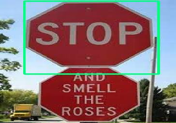

Haar Cascade Classifier Training Tutorial
This page will hopefully serve as a good guide for Haar cascade training using mrnugget's opencv haar training example.
To begin we clone this github repository
$ git clone https://github.com/mrnugget/opencv-haar-classifier-training.git Preperation of the Samples.
I have found that using 50~60 positive images and around 600~700 negative images works well. Crop the positive images so that most of the excess background is removed. As stated in mrnugget's tutorial, make sure to keep an eye on the ratios, they need to be pretty close to each other. Put these positive images in the directory "positive_images", which is inside of the git repository we cloned earlier. As for the negative samples, these can be any pictures you want as long as they are around the same size. I have found the training to work much better when the negative images are highly varied. Put these negative images in the directory "negative_images"
After you images are ready you need to let the training program know where to find your positive and negative images. run the following commands in the terminal making changes to the file extension if necessary.
$ find ./positive_images -iname "*.jpg" > positives.txt $ find ./negative_images -iname "*.jpg" > negatives.txt Now you should see two .txt files in your directory, negatives.txt and positives.txt. We are now ready to create the sample .vec files used in creating the haar cascade classifer. Using a sample amount of 1500 to 1700 works pretty well. Now find the ratio of the positive images sizes. reduce it by about a factor of 5~6 making sure you keep the ratio equal. I have found that if the height and width added exceed about 150 then you will get a bad_alloc error when running the actual training program. "-w 80 -h 40" works well for rectangular images with a width/heigh ratio of around 2. for square images (width height ratio of around 1), i have found that "-w 24 -h 24" works well. For this example using, my stop sign classifier, I will use -w 24 -h 24.
Run this command in terminal, making sure to consider the ratio of the positive images. If your samples are rotated in the x/y direction more that 1.1 radians or .6 radians in the z directions make sure to change those parameters as well.
$ perl bin/createsamples.pl positives.txt negatives.txt samples 1700
"opencv_createsamples -bgcolor 0 -bgthresh 0 -maxxangle 1.1
-maxyangle 1.1 maxzangle 0.5 -maxidev 40 -w 24 -h 24"Now that the samples have been created individualy we need to merge them together using Naotoshi Seo's mergevec tool. first copy the mergevec source into the haartraining folder.
$ cp src/mergevec.cpp ~/opencv-2.4.5/apps/haartraining $ cd ~/opencv-2.4.5/apps/haartraining Now compile the source.
$ g++ `pkg-config --libs --cflags opencv` -I. -o mergevec mergevec.cpp
cvboost.cpp cvcommon.cpp cvsamples.cpp cvhaarclassifier.cpp
cvhaartraining.cpp -lopencv_core -lopencv_calib3d -lopencv_imgproc -lopencv_highgui
-lopencv_objdetectNow we need to make a .txt file containg all of the individual vec files contained in the samples folder. This can be done quickly by running the following command in terminal.
$ find ./samples -name '*.vec' > samples.txtThen run the mergevec tool
$ ./mergevec samples.txt samples.vecTraining the Cascade Classifier.
We are now ready to start the training itself. Some key things to remember: the -h and -w must be the same as the paramaters used in the sample creation. Also, -numPos must be less than the number of samples used in the sample creation. Keeping that in mind run the following command in terminal
opencv_traincascade -data classifier -vec samples.vec -bg negatives.txt
-numStages 20 -minHitRate 0.999 -maxFalseAlarmRate 0.5 -numPos 1200
-numNeg 700 -w 24 -h 24 -mode ALL -precalcValBufSize 512
-precalcIdxBufSize 512Sit back and wait, training can take a long time. When you classifier is done it will be in the "classifier" directory.
To test your finish classifer run the following python code.
#opens up a webcam feed so you can then test your classifer in real time
#using detectMultiScale
import numpy
import cv2
def detect(img):
cascade = cv2.CascadeClassifier("cascade.xml")
rects = cascade.detectMultiScale(img, 1.3, 4, cv2.cv.CV_HAAR_SCALE_IMAGE, (20,20))
if len(rects) == 0:
return [], img
rects[:, 2:] += rects[:, :2]
return rects, img
def box(rects, img):
for x1, y1, x2, y2 in rects:
cv2.rectangle(img, (x1, y1), (x2, y2), (127, 255, 0), 2)
#cv2.imwrite('one.jpg', img);
cap = cv2.VideoCapture(0)
cap.set(3,400)
cap.set(4,300)
while(True):
ret, img = cap.read()
rects, img = detect(img)
box(rects, img)
cv2.imshow("frame", img)
if(cv2.waitKey(1) & 0xFF == ord('q')):
break
Results
Here are some of the results I have gotten from my haar training with stop signs. All of my classifiers can be found here Results:
  